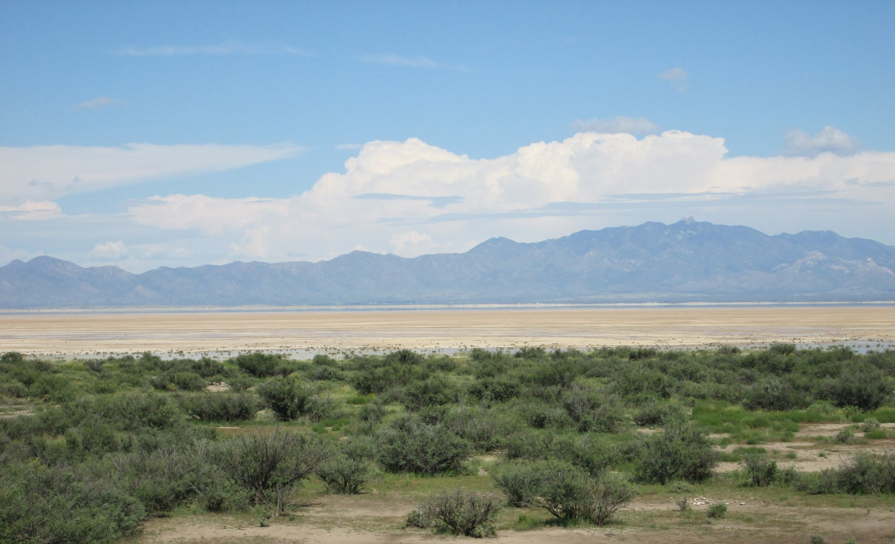
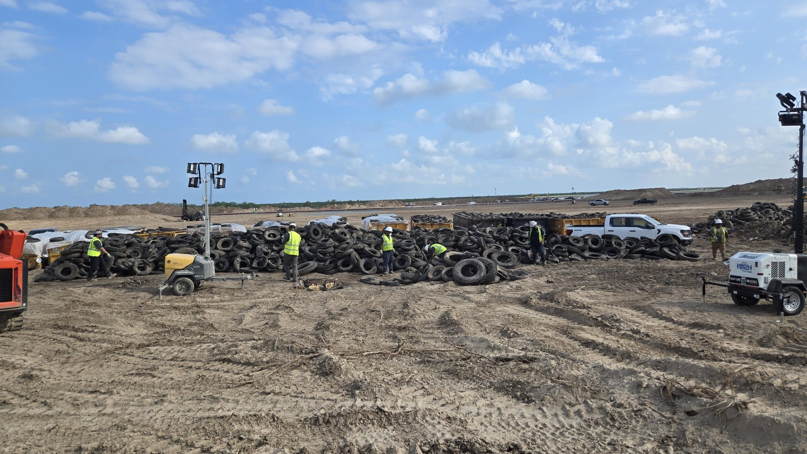

Mentre a Starbase scorre il conto alla rovescia di Flight 15, SpaceX ha aperto un fronte molto diverso, tutto a terra. Con una pagina dedicata e una serie di post su X, l'azienda ha presentato i suoi due grandi centri di supercalcolo per l'intelligenza artificiale, quello in Texas accanto alla base di lancio e quello in Arizona, come investimenti che portano lavoro, tasse e infrastrutture alle comunità che li ospitano. Elon Musk ha rilanciato tutto con tre parole: «SpaceX community benefits». Il dato nuovo è il prezzo del campus in Arizona, mai comunicato prima: insieme a Starbase si superano i 74 miliardi di dollari di investimenti previsti.
Arizona: il campus che non portava il nome SpaceX
Il progetto è diventato pubblico solo il 4 novembre, durante un'assemblea molto partecipata alla scuola elementare di Cochise. La domanda era stata depositata a nome di Tombstone Resources LLC, una società che non richiama SpaceX. Un rappresentante dell'azienda ha spiegato ai residenti che il nome SpaceX sulla pratica avrebbe attirato attenzione da fuori contea. Ora la cifra è ufficiale: circa 50 miliardi di dollari per un campus a circa 130 chilometri a est di Tucson.
I numeri della domanda descrivono un impianto enorme. Il terreno è di 747 acri, circa 300 ettari, vicino alla Willcox Playa, il fondo di un antico lago prosciugato. Sono previsti fino a nove edifici da circa 493.000 piedi quadrati ciascuno, più o meno 46.000 metri quadrati. Il campus dovrebbe entrare in servizio in quattro fasi da circa 1,5 gigawatt, fino a 6 gigawatt a regime, con un sistema di batterie da 24 gigawattora e circa 3,6 miliardi di dollari di potenziamenti della rete elettrica. Per dare un'idea, a piena potenza assorbirebbe circa 2,5 volte l'elettricità di tutti i centri dati della contea di Maricopa, quella di Phoenix, messi insieme.
Il nodo vero è l'energia. Il sito confina con la Apache Generating Station, una centrale a carbone e gas da circa 1 gigawatt che doveva chiudere entro il 2028. Ai residenti SpaceX ha detto che il suo investimento potrebbe portarla a oltre 6 gigawatt. Sull'acqua, invece, l'azienda punta sul raffreddamento a secco: nessun nuovo pozzo, nessun consumo industriale di falda, e un fabbisogno stimato fra 7 e 10 acri-piede l'anno, l'equivalente di 20 o 30 abitazioni.

Cosa promette SpaceX alla contea di Cochise
L'elenco dei benefici diffuso con la campagna è lungo. Sul lavoro, SpaceX indica circa 6.500 posti: 5.500 nei cantieri e 1.000 permanenti. Sul fisco, fino a 103 milioni di dollari l'anno di nuove imposte sugli immobili e fino a 250 milioni una tantum di imposta sulle vendite per la contea. Sull'elettricità, i potenziamenti di rete da 3,6 miliardi sarebbero pagati da SpaceX senza costi per i soci delle cooperative elettriche locali, che nelle stime dell'azienda vedrebbero bollette più basse: per i clienti domestici della cooperativa SSVEC si parla di riduzioni fra il 10 e il 40 per cento, e fino a 460 milioni di dollari l'anno di benefici complessivi per i soci delle cooperative dell'Arizona. Completano il quadro nuovo fotovoltaico, protezione della falda e della fauna, misure contro rumore e inquinamento luminoso e sostegno a scuole e servizi locali.
L'opposizione però è organizzata. Una petizione che chiede alla contea di respingere il permesso ha raccolto circa 2.400 firme, e la playa è un'area di sosta per le gru canadesi, specie protetta a livello federale, di cui SpaceX dice di aver tenuto conto nel progetto. La commissione urbanistica della contea terrà un'udienza pubblica il 9 dicembre a Bisbee, con osservazioni scritte entro il 27 novembre. Se il progetto passerà, i cantieri potrebbero aprire a marzo 2027.
Starbase: 24 miliardi, una centrale a gas e 220 milioni per l'acqua
Il secondo progetto è a casa di Starship. SpaceX vuole costruire e gestire una centrale elettrica a gas e un impianto di supercalcolo su circa 444 acri, quasi 180 ettari, fra Boca Chica Boulevard e il porto di Brownsville. I 24 miliardi di dollari coprono solo le prime fasi. Avere una centrale propria permette di non agganciarsi alla rete del Texas, dove ad agosto il governatore Greg Abbott ha sospeso i nuovi allacciamenti di centri dati. Per le turbine SpaceX ha chiesto all'agenzia ambientale texana i permessi per 35 turbine a gas mobili, circa 750 megawatt.
La storia del terreno spiega i 220 milioni. In estate SpaceX ha chiesto a Brownsville di escludere l'area dai confini comunali, offrendo in cambio quella somma per acquedotto e fognature. La città ha accettato ad agosto e Starbase ha poi annesso il terreno, che così resta fuori dalla moratoria di 90 giorni sui centri dati entrata in vigore a Brownsville la settimana scorsa. Il 12 novembre SpaceX l'ha definito il più grande contributo privato al futuro idrico della città, una risposta a uno dei problemi più urgenti della regione: garantire acqua potabile per le prossime generazioni. Dei 220 milioni, 40 sono già stati versati, e il cantiere avrebbe già creato più di 3.000 posti di lavoro.

L'azienda ha mostrato anche la bonifica in corso. Parti del terreno, spiega SpaceX, erano usate come discarica abusiva fin dagli anni Sessanta: rottami metallici, elettrodomestici, vecchi serbatoi, lana di vetro, materiali edili e migliaia di pneumatici abbandonati, che ora vengono rimossi. Il 9 dicembre alle 19 la commissione cittadina di Starbase voterà uno sgravio sulle imposte immobiliari e un accordo di sviluppo economico per il progetto. Due dei tre commissari che votano sono dirigenti SpaceX, un punto sottolineato dalla stampa americana.
Perché SpaceX parla di comunità proprio ora
Il tempismo non è casuale. In Texas il vento politico è cambiato: la governatrice eletta Gina Hinojosa, che la settimana scorsa ha battuto Abbott, ha annunciato che bloccherà le approvazioni di centri dati finché il parlamento statale non avrà approvato nuove tutele, e ha chiesto di congelare l'eventuale vendita a SpaceX del parco statale di Boca Chica fino al suo insediamento a gennaio. A Brownsville la South Texas Environmental Justice Network ha annunciato una protesta per qualità dell'aria, consumi d'acqua e bollette, mentre altri residenti accolgono volentieri i posti di lavoro. Attorno a Memphis, dove i centri Colossus funzionano in gran parte con turbine a gas, i residenti hanno fatto causa per le emissioni.
Dietro c'è la fame di energia dell'intelligenza artificiale. SpaceX ha chiuso il terzo trimestre con 1,7 gigawatt di potenza di calcolo installata, punta a 2,5 o 3 gigawatt entro fine anno e vuole almeno altri 10 gigawatt nel 2027: il solo campus dell'Arizona, a regime, varrebbe più del triplo di quanto ha oggi. Il giorno dopo le elezioni Musk aveva commentato su X: «Data centers in space looking pretty appealing right now», cioè che i centri dati nello spazio sembrano piuttosto allettanti in questo momento. È il richiamo a Starmind, la costellazione di satelliti per il calcolo in orbita che dovrà essere lanciata da Starship. Ma finché quella non esiste, servono gigawatt a terra, e terreni, acqua e consenso locale per alimentarli.
| Quando | Dove | Cosa |
|---|---|---|
| 27 novembre | Contea di Cochise, Arizona | scadenza delle osservazioni scritte sul campus |
| 9 dicembre | Bisbee, Arizona | udienza pubblica della commissione urbanistica |
| 9 dicembre, ore 19 locali | Starbase, Texas | voto sullo sgravio fiscale per centrale e supercalcolo |
| Gennaio 2027 | Austin, Texas | insediamento della governatrice Hinojosa |
| Marzo 2027 | Cochise, Arizona | possibile apertura dei cantieri, se approvato |
Intanto, a Starbase
Nella sera del 12 novembre, ora del Texas, Ship 42 è stata portata sul Pad 2 e sollevata dalla torre sopra Booster 22: Starship Flight 15 è di nuovo impilata e il conto alla rovescia è partito. La finestra di 75 minuti si apre stasera alle 23:45 ora italiana. Alla mattina del 13 novembre la modifica della licenza FAA non risulta ancora pubblicata e SpaceX continua a indicare il lancio in attesa dell'approvazione regolatoria. Se tutto procede, sarà il primo tentativo di riportare alla torre entrambi gli stadi di un razzo orbitale.
Il dossier sugli ultimi preparativi di Flight 15, con Booster 22 sulla rampa e il carico dei 26 Starlink V3, passa all'archivio Notizie.
Fonti pubbliche e tracce
Ultimo aggiornamento editoriale: 13 novembre 2026, ore 9:30 (ora italiana). Nel corpo non si ripete la fonte a ogni frase: le tracce sono raccolte qui. Le citazioni in inglese sono tradotte subito dopo. I numeri su posti di lavoro, imposte e bollette sono stime diffuse da SpaceX e dai documenti di progetto, non dati verificati in modo indipendente.
- SpaceX su X, 12 novembre 2026 (post fissato): lancio della pagina sugli impegni verso le comunità, spacex.com/updates, «Building the future».
- SpaceX su X, 12 novembre 2026: dalla Rio Grande Valley alla contea di Cochise, posti di lavoro, infrastrutture e basi fiscali; pagina SpaceX sulla contea di Cochise; rendering del campus.
- SpaceX su X, 12 novembre 2026: 220 milioni di dollari per acqua e fognature di Brownsville e della contea di Cameron.
- SpaceX su X, 12 novembre 2026: bonifica del sito di supercalcolo di Starbase, discarica abusiva dagli anni Sessanta; fotografia della bonifica.
- Elon Musk su X, 12 novembre 2026: «SpaceX community benefits».
- Sawyer Merritt su X, rilanciato da Elon Musk, 12 novembre 2026: elenco dei benefici del campus in Arizona (6.500 posti, imposte, bollette SSVEC, 3,6 miliardi di rete, 24 GWh di batterie, acqua).
- Teslarati, 12 novembre 2026: prezzo di circa 50 miliardi, totale oltre 74 miliardi con Starbase, Tombstone Resources LLC, assemblea del 4 novembre (fonte KVOA), dati del sito, Apache Generating Station, confronto con Maricopa (analisi Arizona Republic), petizione, gru, udienza del 9 dicembre a Bisbee, 40 milioni già versati a Brownsville, 1,7 GW di calcolo installato.
- Teslarati: avviso di udienza di Starbase, 444 acri, 24 miliardi per le prime fasi, sgravio fiscale del 9 dicembre, esclusione del terreno da Brownsville, moratoria comunale, permessi per 35 turbine (fonte Politico), posizione di Gina Hinojosa, commento di Musk, obiettivi di calcolo, protesta annunciata (fonte: il Tribune citato da Teslarati).
- SpaceX, pagina di missione Starship Flight 15 e Spaceflight Now su X, 12 novembre 2026: Ship 42 sollevata su Booster 22, lancio non prima del 13 novembre alle 22:45 UTC, in attesa di approvazione; NASASpaceflight, 13 novembre 2026: licenza FAA non ancora pubblicata.
- Rivoluzione Spaziale, dossier del 2 novembre 2026: Starmind e il calcolo in orbita.
Fotografie utilizzabili
Copertina e foto della bonifica sono immagini dell'evento pubblicate da SpaceX su X il 12 novembre 2026, usate con credito SpaceX e dicitura «uso editoriale non commerciale». La foto della Willcox Playa è di The Old Pueblo su Wikimedia Commons, licenza libera CC BY-SA 4.0. Dettagli in scheda dei crediti fotografici.
Apri il dossier Flight 15, ultimi preparativi, archiviato · Archivio Notizie · Torna a SpaceX